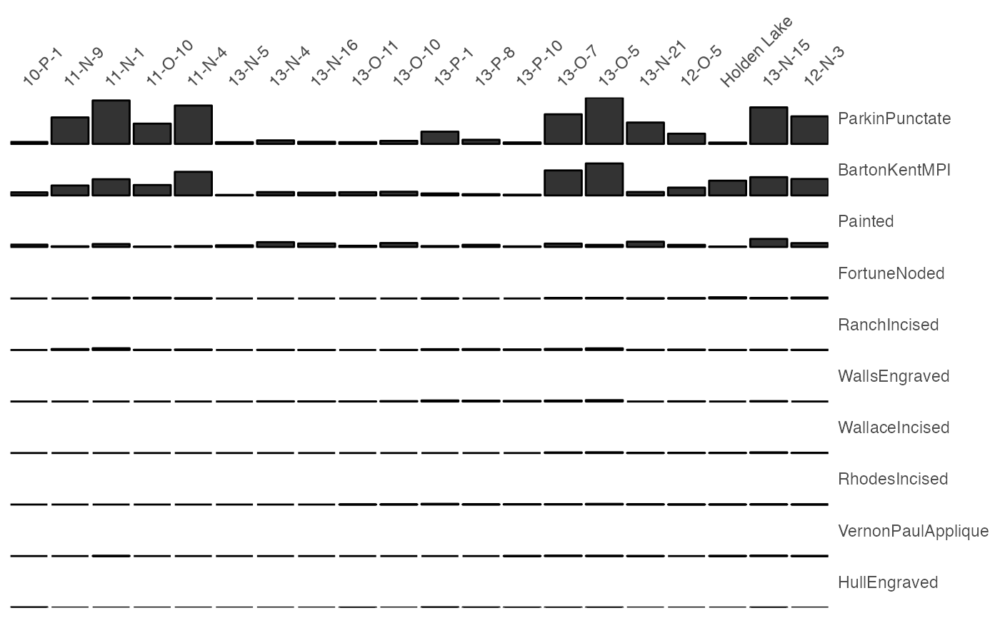
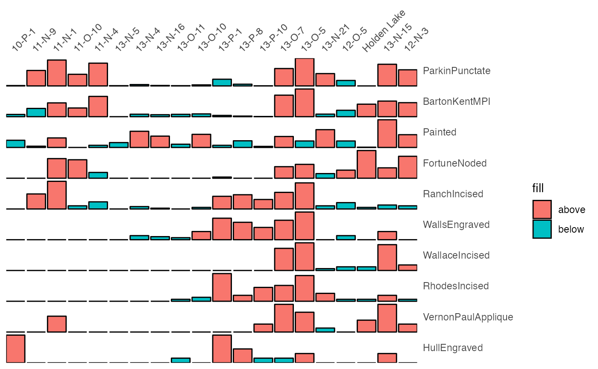
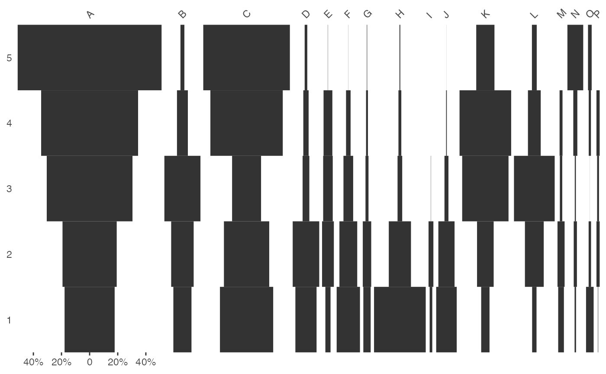
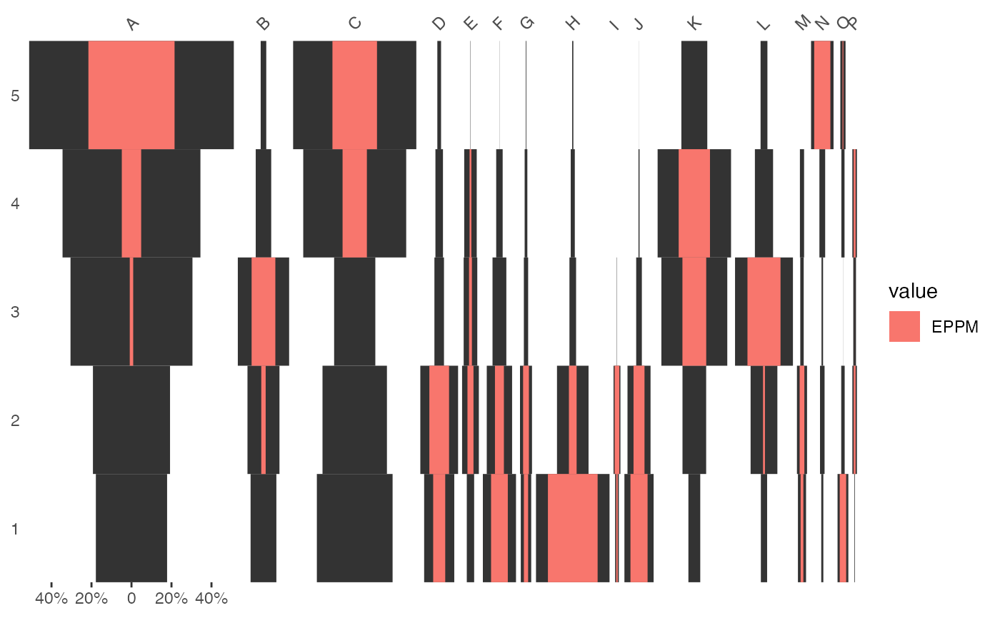

Plots a Bertin, Ford (battleship curve) or Dice-Leraas diagram.
plot_bertin(object, ...) plot_ford(object, ...) # S4 method for CountMatrix plot_bertin(object, threshold = NULL, scale = NULL) # S4 method for CountMatrix plot_ford(object, EPPM = FALSE)
Arguments
| object | An object to be plotted. |
|---|---|
| ... | Currently not used. |
| threshold | A |
| scale | A |
| EPPM | A |
Value
A ggplot object.
Bertin Matrix
As de Falguerolles et al. (1997) points out: "In abstract terms, a Bertin matrix is a matrix of displays. [...] To fix ideas, think of a data matrix, variable by case, with real valued variables. For each variable, draw a bar chart of variable value by case. High-light all bars representing a value above some sample threshold for that variable."
Ford Diagram
If EPPM is TRUE and if a relative abundance is greater than
the mean percentage of the type, the exceeding part is highlighted.
This positive difference from the column mean percentage (in french "écart
positif au pourcentage moyen", EPPM) represents a deviation from the
situation of statistical independence. As independence can be interpreted as
the absence of relationships between types and the chronological order of
the assemblages, EPPM is a useful graphical tool to explore
significance of relationship between rows and columns related to
seriation (Desachy 2004).
References
Bertin, J. (1977). La graphique et le traitement graphique de l'information. Paris: Flammarion. Nouvelle Bibliothèque Scientifique.
de Falguerolles, A., Friedrich, F. & Sawitzki, G. (1997). A Tribute to J. Bertin's Graphical Data Analysis. In W. Badilla & F. Faulbaum (eds.), SoftStat '97: Advances in Statistical Software 6. Stuttgart: Lucius & Lucius, p. 11-20.
Desachy, B. (2004). Le sériographe EPPM: un outil informatisé de sériation graphique pour tableaux de comptages. Revue archéologique de Picardie, 3(1), 39-56. DOI: 10.3406/pica.2004.2396.
Ford, J. A. (1962). A quantitative method for deriving cultural chronology. Washington, DC: Pan American Union. Technical manual 1.
See also
Other plot: plot_date,
plot_diversity, plot_line,
plot_matrix, plot_spot
Examples
# \donttest{ ## Abundance data ## Coerce dataset to a count matrix mississippi_count <- as_count(mississippi) ## Plot a Bertin diagram... ## ...without threshold plot_bertin(mississippi_count, threshold = NULL)## ...with the variable mean as threshold plot_bertin(mississippi_count, threshold = mean)## ...with variables scaled to 0-1 scale_01 <- function(x) (x - min(x)) / (max(x) - min(x)) plot_bertin(mississippi_count, threshold = mean, scale = scale_01)## Abundance data ## Coerce dataset to a count matrix (data from Desachy 2004) compiegne_count <- as_count(compiegne) ## Plot a Ford diagram... ## ...without threshold plot_ford(compiegne_count)## ...with EPPM plot_ford(compiegne_count, EPPM = TRUE)# }